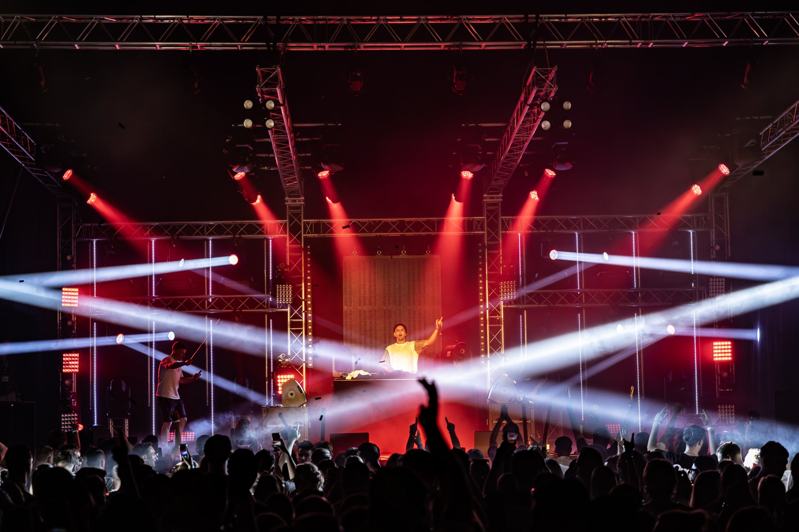
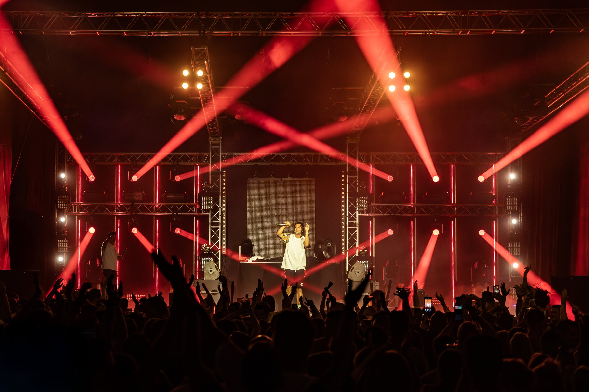
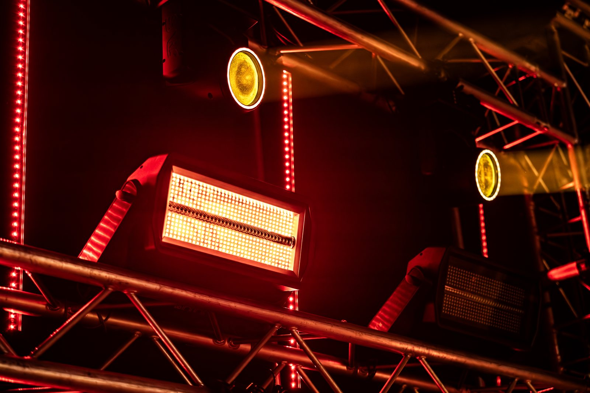
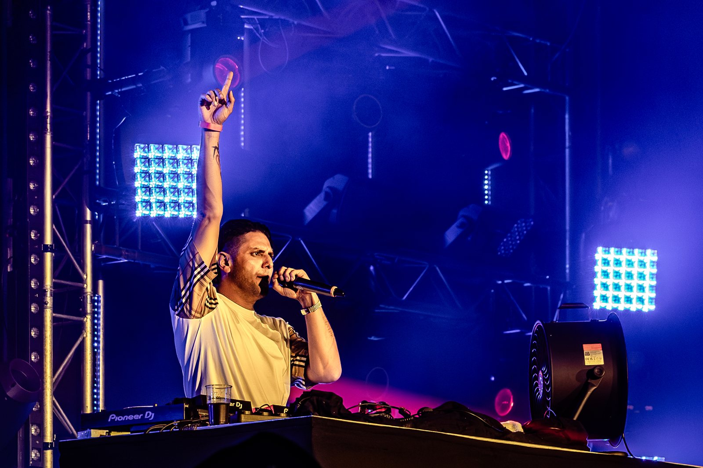

Sportclub’25 from Bocholtz turned 100, and that called for a party. We took care of the live production.
Truss, moving heads, LED and a packed hall: our favourite kind of home game.

GTF Franzen / News 2025
The anniversary party in Bocholtz, with live production by us.
Sportclub’25 from Bocholtz turned 100, and that called for a party. We took care of the live production.
Truss, moving heads, LED and a packed hall: our favourite kind of home game.



Photo: Highlite
Tell us what you have in mind. You will hear back from the people who will actually build it.
info@franzenbocholtz.nl